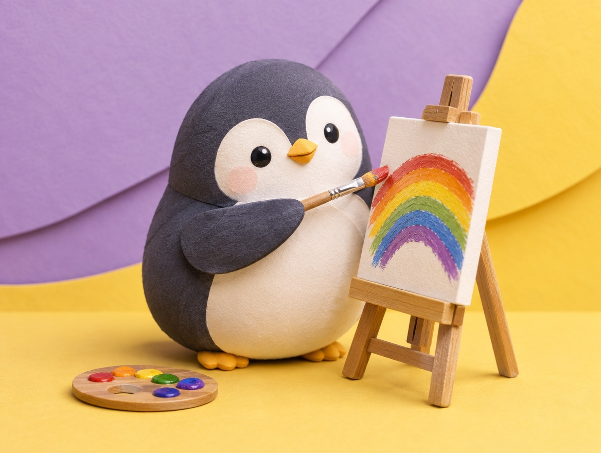

🧪 LAB · 試作 — AIが読書メモから一気に作った記事です。本番の一覧には出していません · 試作の一覧
🐧 EVERYDAY LIFE⚡ 21 SEC
A reward for something you love can kill the fun 🎨

Reward Trap
It is said that if you give a reward for something people do for fun, they may stop doing it.
For Example
For example, say you give pocket money to a child who loves drawing, every time they draw.
The Switch
Then drawing changes from "because I love it" to "for money."
⚡ TRY IT
The reward seesaw
This penguin loves drawing. Give a coin after each picture. Then see what happens when the coins stop.
I love drawing! 🎨
Oh, a coin! Lucky!
Hmm… how many coins for this one?
I draw… for coins.
No coin? Then I won't draw.
Coins? I don't need them. Drawing is fun!
💗 Because I love it
🪙 For money
🪙 Coins given: 0
😶 The coins stopped, so the drawing stopped too. The fun is gone.
🌈 The coins stopped, but the drawing goes on. The fun is safe!
Money Stops
And when the money stops, they stop drawing.
Its Name
It is called the "undermining effect."
📚 I learned this from the Japanese blog "Panda no Ondo".